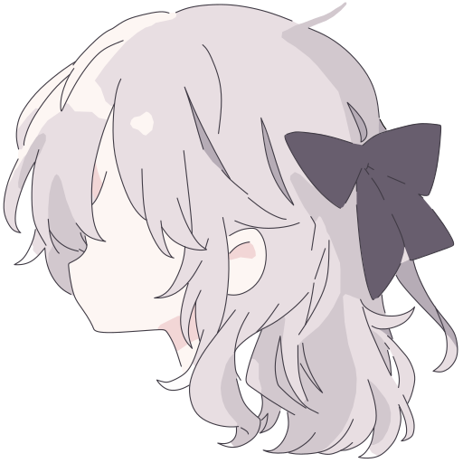

The Key of Urala
The Key of Urala
Mark at 26px, then the name in Manrope Medium 16px, sentence case, 8px apart. Pass it to the
logo
slot on
TopNav
and
Footer
. The mark keeps its own colors on cream and on dark.